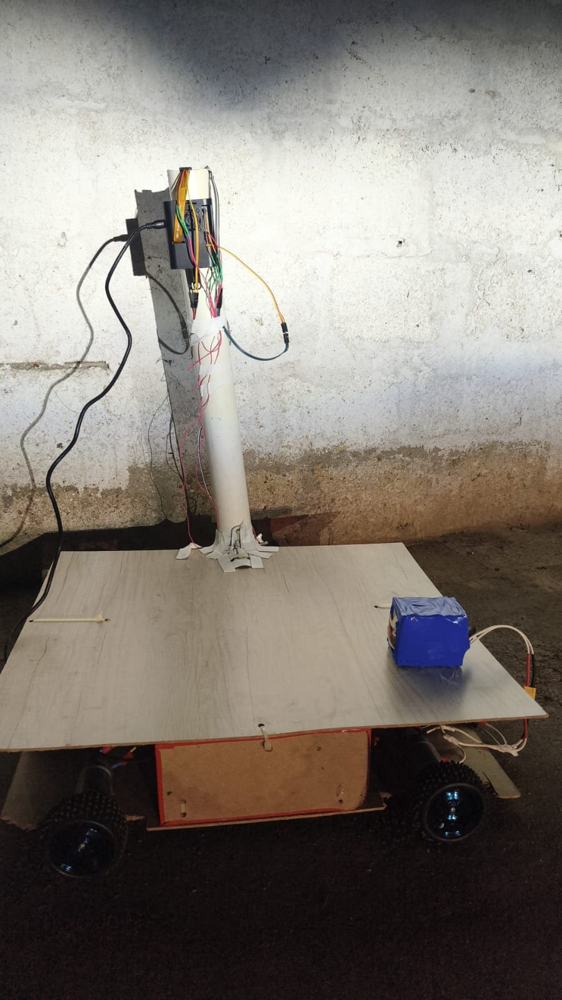
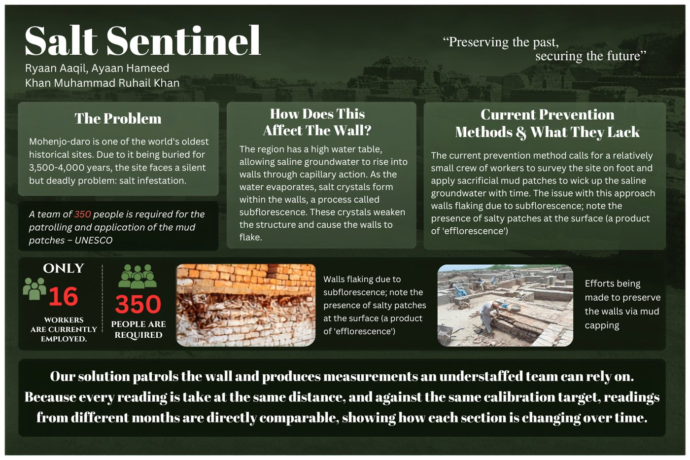
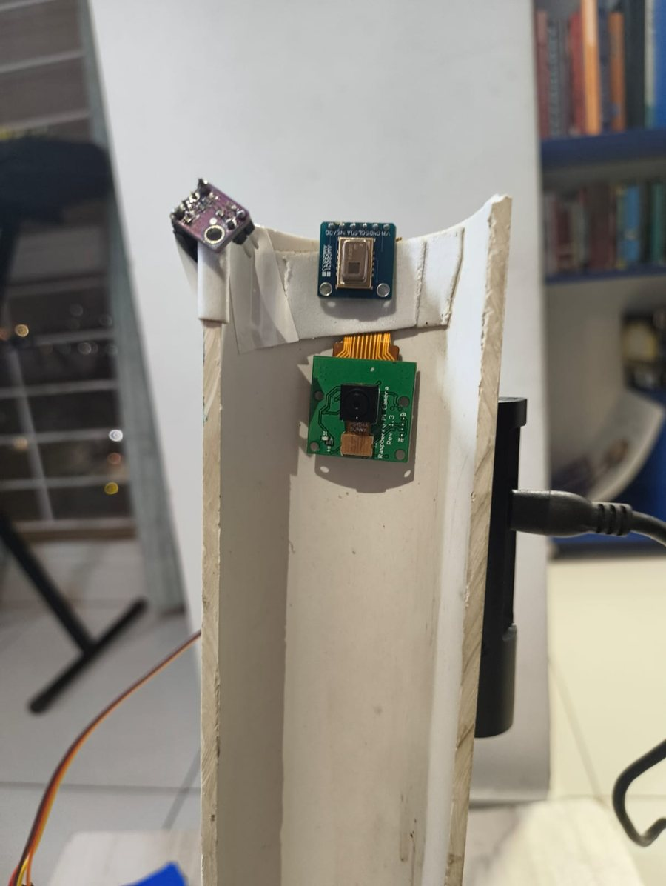
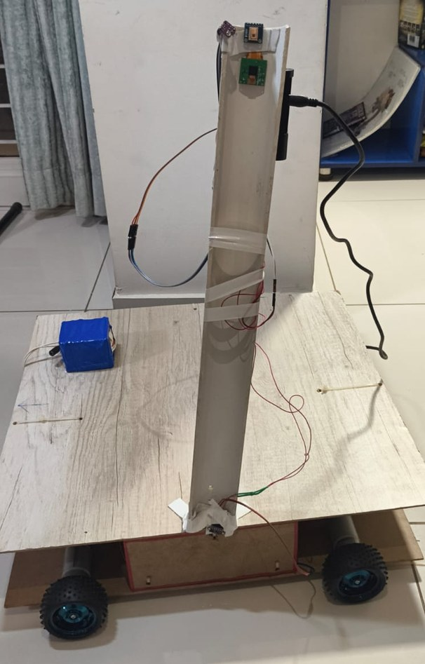
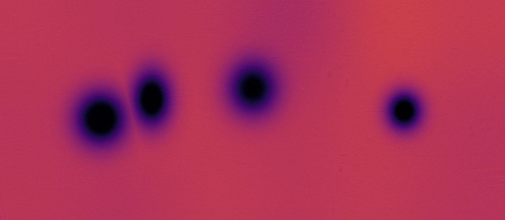
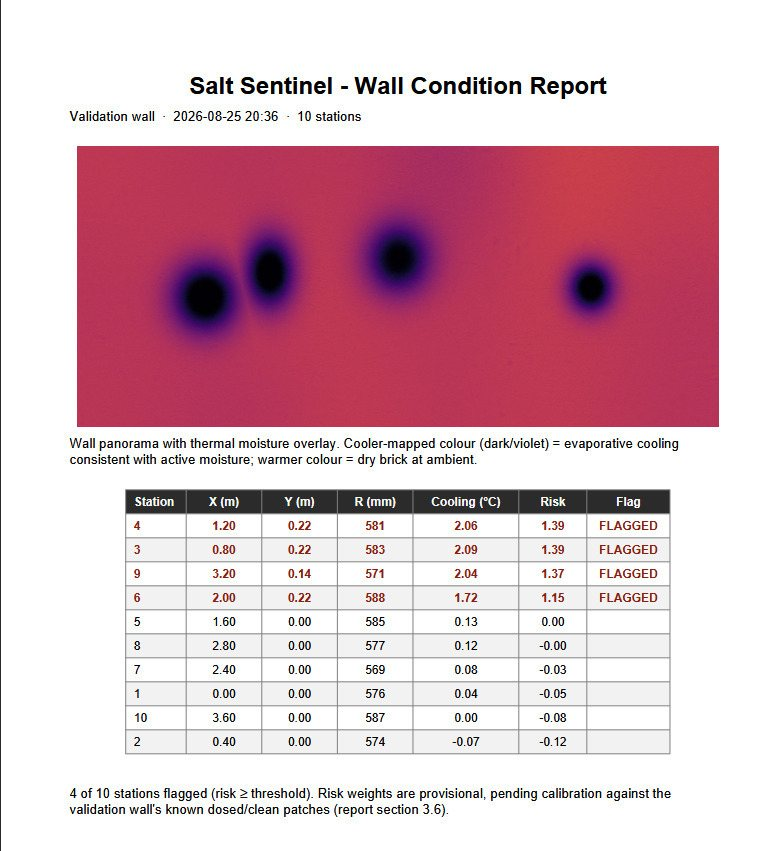

Salt Sentinel
A rover that looks for salt damage on the walls of Mohenjo-daro without touching them.

what it's for
Mohenjo-daro is 4,500 years old and it's being destroyed by salt. The water table under it is high and salty, the water climbs up through the fired brick, and when it evaporates the salt crystallises inside the pores and breaks the brick apart from the inside.
There's already a fix. Conservators put a sacrificial layer of mud on the wall, the salt crystallises in the mud instead of the brick, and the mud gets scraped off and replaced. The hard part is knowing where to put it. The site is about 250 hectares, it has 16 workers where about 350 are needed, and right now the decision gets made by walking around and looking.
Salt Sentinel drives along a wall, stops at fixed stations and writes down what it measures, so you get a ranked list of where to send the mud first and a record you can compare against next month. Salt-weakened brick is powdery and anything pressed into it causes the exact damage we're trying to prevent, so it never touches the wall.

how it works
There are two processors. The Pi does vision and scoring, and the ESP32 does the motors and a 500ms watchdog that stops the rover if the Pi stops talking to it. One USB cable carries power and serial between them.
Damp brick reads colder than dry brick because of evaporation, so the thermal pass runs at about 1 metre, where the frame is wide enough to have both in it. Comparing them in the same frame cancels out most of the sensor's error. A station only gets flagged if the frame has an actual dry-then-suddenly-cooler step in it, so a rock or a hand in front of the sensor doesn't count.
Every station gets a risk score, scored against the median of the whole patrol so one wet month doesn't make the entire wall look like it's getting worse. Readings taken in the rain, too close to the dew point or without a valid distance from the wall don't go into the trend at all.


what comes out of it
Three files that open without any special software: a CSV of every reading, a wall panorama with a thermal overlay, and a PDF report listing every station with a risk score.
The two pictures below came from a staged run that I used to build the report pipeline before the sensors were working, so they show the format and not a real result. The demo code is gone now and the real patrol writes the same files from real readings.


what changed from the plan
- We designed around an MLX90640 thermal camera with 768 pixels. It couldn't be sourced in Pakistan in time, so the rover uses an AMG8833 with 64. The smallest temperature change it can reliably see is about 15 to 20 times bigger
- The sensor head was going to be on pan and tilt servos. It's a fixed bracket now
- The four-light camera pass for measuring salt crust is written, but the LED ring isn't fitted, so that pass is switched off
- Two of the three ToF sensors are fitted, so there's no corner detection
- The firmware watchdog is the only automatic stop, the e-stop got removed in a rebuild
- The risk weights are provisional until they're calibrated against a wall with known patches
things that bit us
- Every VL53L0X ships at the same I2C address, so they have to be woken one at a time and reassigned on every boot
- At 250mm the thermal frame is about one brick wide, so a big damp patch fills it and the comparison subtracts to zero
- The Pi 5's GPIO sits behind the RP1 chip, so RPi.GPIO and pigpio silently don't work
- The risk score had a sign bug that only showed up when real readings replaced the staged ones, because the staged data had the same sign backwards